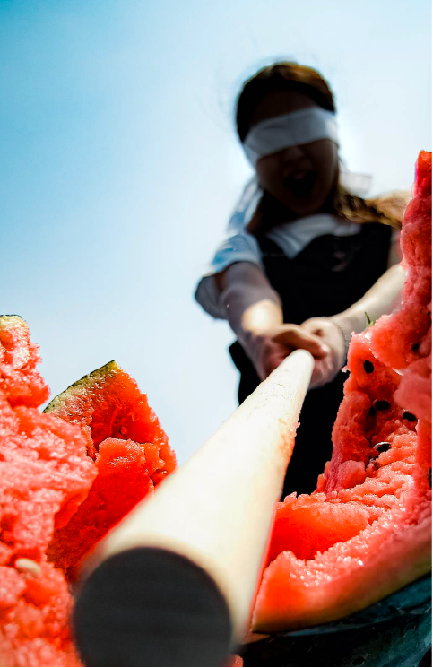

自己分析で見つけた３つの才能
時期
大学３年の冬 〜 大学４年の冬

カテゴリー
就職活動・自己探求
行ったこと
TCL分析/価値観選択ワーク
才能は「ついやってしまう行為」の中に隠れている
この記事では、就職活動などを通して見つけた自分の３つの才能についてお話しします。ですが、その前に「才能」という言葉を定義しておきたいと思います。
一般的に才能と言うと「人よりも得意なこと」というイメージがあると思います。確かに、それは間違っていないと思いますが、そのように考えてみると環境によって才能が変化することになってしまいます。例えば、小学校で一番足が速い少年が、陸上が強い中学校に入学した途端に下位になってしまったという場合を考えてみてください。その場合、小学校では「足が速い才能」があったけど、中学校ではその才能がなくなったように感じてしまいます。
そこで「ついやってしまう行為」の中に才能が隠れていると考えることで絶対的な才能を見つけることができます。この記事ではこのように才能を定義して話を進めていきます。
才能１：課題を解決するために誰もやっていない方法を試してしまう
才能１：斬新なアイデア
私は、斬新なアイデアを考えることが好きで、特に「まだ誰もやっていなさそうなこと」に強いモチベーションを感じます。さらに、それらのアイデアで課題を解決したり、誰かに良い影響を与えることに喜びを感じます！
小学生の頃は、花粉症対策に肩掛け箱テッシュを持参していた
ひとつ具体的なエピソードをお話しします。
小学生の頃、私は春になると花粉症に悩まされていました。鼻をかんでもかんでも出てくる鼻水にうんざりしていました。そこであるとき、箱ティッシュをそのまま学校に持っていきたいと思いました。しかし、箱ティッシュは大きくてランドセルには入りません。さらに、登下校時こそ鼻をかむことが多いことにも気づいていました。そこで私はこんな物を作りました。

自作した肩掛け箱ティッシュ
このように、箱ティッシュの側面に穴を開けそこに紐を通して肩に掛けれるようにしたのです。このようにすることで学校に箱ティッシュを簡単に持って行くことが出来ますし、登下校時もすぐに鼻をかめるのです。
このように、私は幼少期から斬新なアイデアで課題を解決することが好きだったのです笑
才能２：人の心や物の中身の仕組みを知ろうとしてしまう
才能２：仕組みへの興味
私は物の中身の仕組みをつい知りたくなってしまいます。さらに、人の行動や感情の本質を探るのが好きです。それゆえに、Youtubeで毎日のように心理学や哲学についての動画を見ています。
幼少期、プレゼントされたおもちゃは３日で原型がなくなる
幼少期、おもちゃを分解するのが好きでした。「なぜ、音が鳴るのだろう？」「なぜ、動くのだろう？」と自然に疑問に思っていたのです。そこで、ネジ穴を見つけると即座にドライバーで中身をこじ開けてみる。そんな子供でした。
さらに、２つの別々のおもちゃの頭を付け替えたり、二つを合体させたりするもの好きでした。このことから「既存のやり方」にはすぐに飽きて、少し変わった独自の方法を編み出す癖があるのかもしれません。
才能３：視覚的な魅力を追求してしまう
才能３：スペクタクル
特に高校生以降は、視覚的な魅力を追求することに喜びを感じることが増えたと思います。例えば、美術の授業で絵を描く際には、休み時間に美術室に通って絵をブラッシュアップさせたりしていました。また、綺麗な映像が好きでミュージックビデオや映画を鑑賞するのが趣味の一つでもあります。
大学時代は写真部の部長を務め、スペクタクルな写真を撮っていた
大学２年の秋から1年間、大学の写真部の部長を務めていました。写真部の活動では主に「スペクタクルな写真」を撮ることに熱中していました。いくつか写真を紹介します。
写真：雨のちトマト
写真：スイカ斬り
写真：学生時代のポートフォリオの表紙
このような視覚的に印象的で面白い写真を撮ることに喜びを感じていました。
まとめ
本日は、「自己分析で見つけた３つの才能」と題して、私の３つの才能とそれぞれのエピソードをお話ししました。改めて３つの才能をまとめると以下のようになります。
【３つの才能】
斬新なアイデア：課題を解決するために誰もやっていない方法を試してしまう
仕組みへの興味：人の心や物の中身の仕組みを知ろうとしてしまう
スペクタクル：視覚的な魅力を追求してしまう
これらの才能をさらに磨いて、人々に良い影響を与えられる人になりたいと思います！